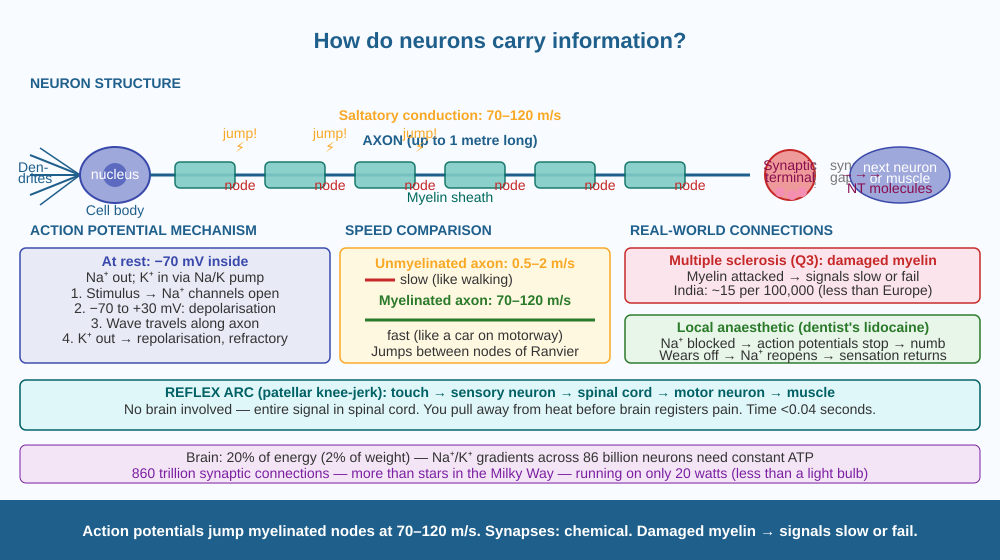

Discover the electrical and chemical system your brain uses to send signals at nearly the speed of thought — and understand why the brain can send 120 signals per second along a single nerve fibre.
You touch a hot surface. In under 0.1 seconds, your hand pulls away — before you even consciously feel pain. Your arm muscles received an instruction faster than conscious thought. Then the pain arrives. Then your brain registers what happened. The signal had to travel from fingertips to spine to brain to muscles — all within a fraction of a second. How?
Neuron structure:
A neuron has three main parts: - Dendrites: Short branched extensions that receive signals from other neurons or sensory receptors. - Cell body (soma): Contains the nucleus and processes incoming signals. - Axon: A long single extension (up to 1 metre in the human body) that carries the signal away from the cell body toward the next neuron or muscle.
The action potential — the nerve signal:
At rest, the inside of a neuron is more negatively charged than the outside (about −70 mV). This is maintained by ion pumps (sodium-potassium pump) that keep more Na⁺ ions outside and K⁺ ions inside.
When a sufficient stimulus arrives: 1. Depolarisation: Na⁺ channels open → Na⁺ rushes in → inside becomes positive (+30 mV). This is the action potential — the nerve impulse. 2. This depolarisation triggers the next section of membrane to open its Na⁺ channels — creating a wave of electrical change that travels along the axon. 3. Repolarisation: K⁺ channels open, K⁺ rushes out → inside becomes negative again. The original Na⁺/K⁺ balance is restored by the pump. 4. Refractory period: A brief moment when the neuron cannot fire again — this ensures the signal travels in only one direction.
Myelin sheath — the speed booster:
Many axons are wrapped in a fatty insulating layer called the myelin sheath (made by Schwann cells in the peripheral nervous system). The myelin sheath is not continuous — it has small gaps called nodes of Ranvier. In a myelinated axon, the action potential "jumps" from node to node (saltatory conduction) instead of travelling continuously along the entire membrane. This dramatically increases speed: - Unmyelinated axon: ~0.5–2 m/s - Myelinated axon: ~70–120 m/s (as fast as a car on a motorway)
Damaged myelin → slower or failed signal transmission. This is what happens in multiple sclerosis (MS) — an autoimmune disease where the immune system attacks myelin sheaths. Symptoms include muscle weakness, loss of coordination, and vision problems (the optic nerve is heavily myelinated). This directly explains Q3.
Synaptic transmission — crossing the gap:
At the end of an axon, the signal must cross a tiny gap (synapse) to the next neuron or muscle. Electrical signals cannot jump this gap directly. Instead: 1. The action potential reaches the synaptic terminal (axon terminal). 2. Vesicles containing chemical neurotransmitters (e.g., acetylcholine, dopamine, serotonin) fuse with the membrane and release their contents into the synapse. 3. Neurotransmitters bind to receptors on the next neuron's dendrites. 4. If enough neurotransmitters bind, an action potential is triggered in the next neuron. 5. Neurotransmitters are then broken down by enzymes or reabsorbed.
Think of a myelinated axon as a train on a high-speed rail line — but instead of running on continuous track, it jumps between stations (nodes of Ranvier). An unmyelinated axon is like a person walking the entire distance. The jumping signal is faster. The chemical synapse is like passing a baton between relay runners — the baton (neurotransmitter) must be thrown from one runner (neuron) and caught by the next before the race continues.

The diagram shows one neuron in detail: dendrites on the left, cell body with nucleus, long axon, myelin sheath segments (in blue) with nodes of Ranvier (gaps) between them, synaptic terminals at the right end. An action potential wave is shown (wave of + and − charges) jumping from node to node. Inset at the synapse: vesicles releasing neurotransmitters into the gap → binding to receptors on the next neuron. Inset showing speed comparison: unmyelinated (slow arrow) vs myelinated (fast arrow).
Test your reflex arc: sit in a chair, cross one leg over the other so the top leg hangs freely. Ask someone to gently tap just below the kneecap (patellar tendon) with the edge of their hand. The knee should kick forward automatically. This is a patellar reflex — the tap stretches a tendon, which sends an action potential to the spinal cord via a sensory neuron, which immediately triggers a motor neuron back to the quadriceps muscle. No brain involvement — it is entirely a spinal reflex. Time the delay: it is well under 0.1 seconds.
At rest, a typical neuron has Na⁺ pumped out and K⁺ pumped in, maintaining the −70 mV resting potential. This pumping requires ATP (energy). It is estimated that the brain uses about 20% of the body's total energy despite being only 2% of its weight — largely to maintain these ion gradients across billions of neurons. During an action potential, ions rush through without requiring energy — but after each potential, the pump must restore the balance using ATP. What do you think happens to signal quality in neurons when blood sugar drops? Predict what would happen to thinking and reflex speed.
How do neurons transmit signals along their length?
Why is understanding the neural mechanism more useful than memorising nerve names?
If the myelin sheath around a neuron were damaged, what would you predict?
A nerve in the arm is 0.8 metres long. Signal speed in a myelinated axon is 80 m/s; in an unmyelinated axon it is 1.5 m/s. (a) Calculate the time for a signal to travel the full 0.8 m in each case. (b) If the reflex must complete in under 0.04 seconds from touch to muscle response (including signal to spinal cord and back), is this possible with an unmyelinated axon? (c) A doctor tests nerve conduction velocity and finds it is only 12 m/s in a patient — what does this suggest about the myelin?
The human brain has approximately 86 billion neurons, and each neuron can form up to 10,000 synaptic connections. That gives about 860 trillion possible synaptic connections — more connections than there are stars in the Milky Way. Yet the brain weighs only 1.4 kg and consumes only about 20 watts of power (less than a standard light bulb). No computer on Earth can match this combination of density, flexibility, and energy efficiency. The most powerful AI systems require millions of watts to process tasks that your brain handles effortlessly on 20 watts.
Action potentials (Na⁺ rushing in) travel along axons. Myelin sheath allows saltatory conduction (jumping at nodes of Ranvier) → 70–120 m/s. Synapses use neurotransmitters to pass signals between neurons. Damaged myelin → slow or failed signals.